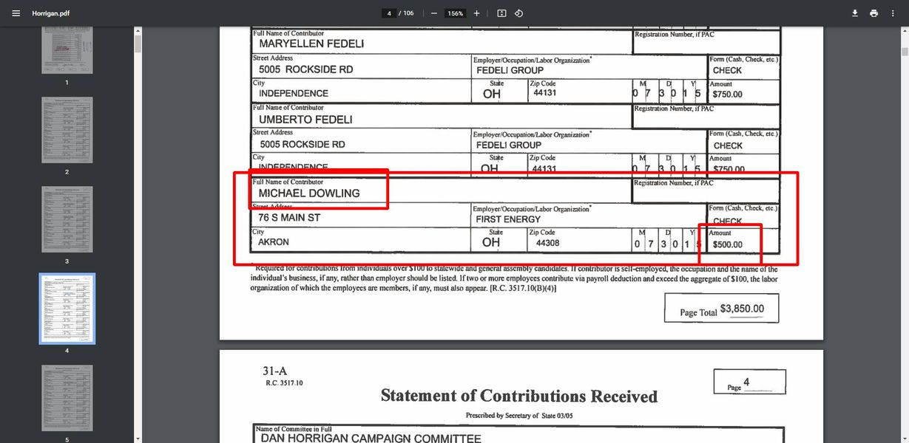

Timeline photos
Hey look who donated to @[100064805494040:2048:City of Akron, Ohio - Mayor's Office] Dan Horrigan's campaign:
MICHAEL DOWLING.
They SAME Michael Dowling that just got named as one of 2 First Energy Executives who "devised and orchestrated FirstEnergy's payments to public officials in exchange for favorable legislation and regulatory action."
I'm sure Michael Dowling was just being a good friend and totally pure of heart when he donated to Dan Horrigan. /s